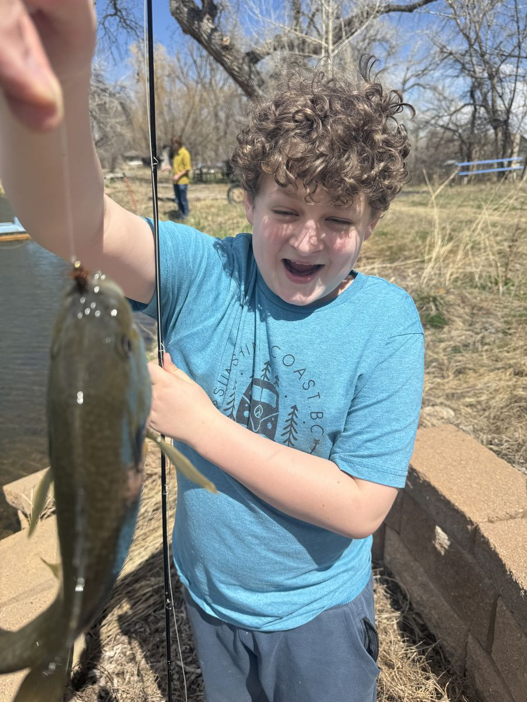
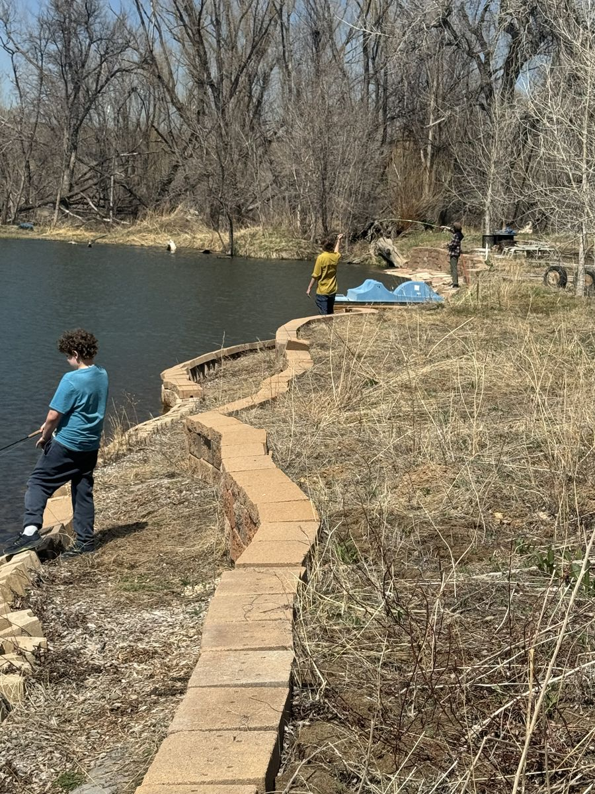
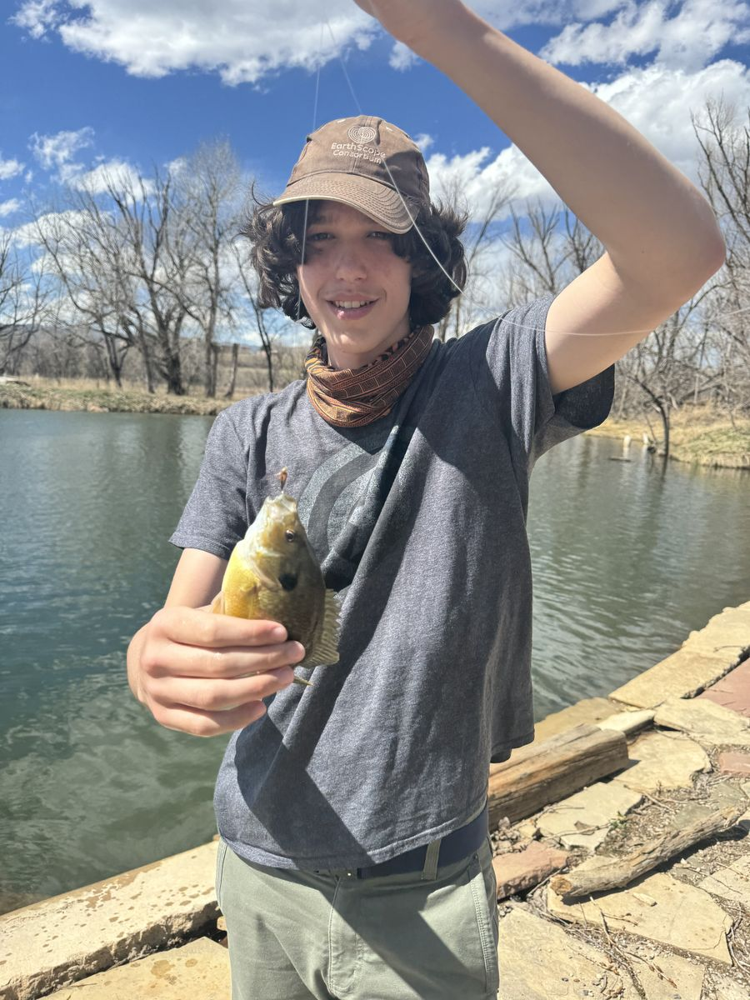
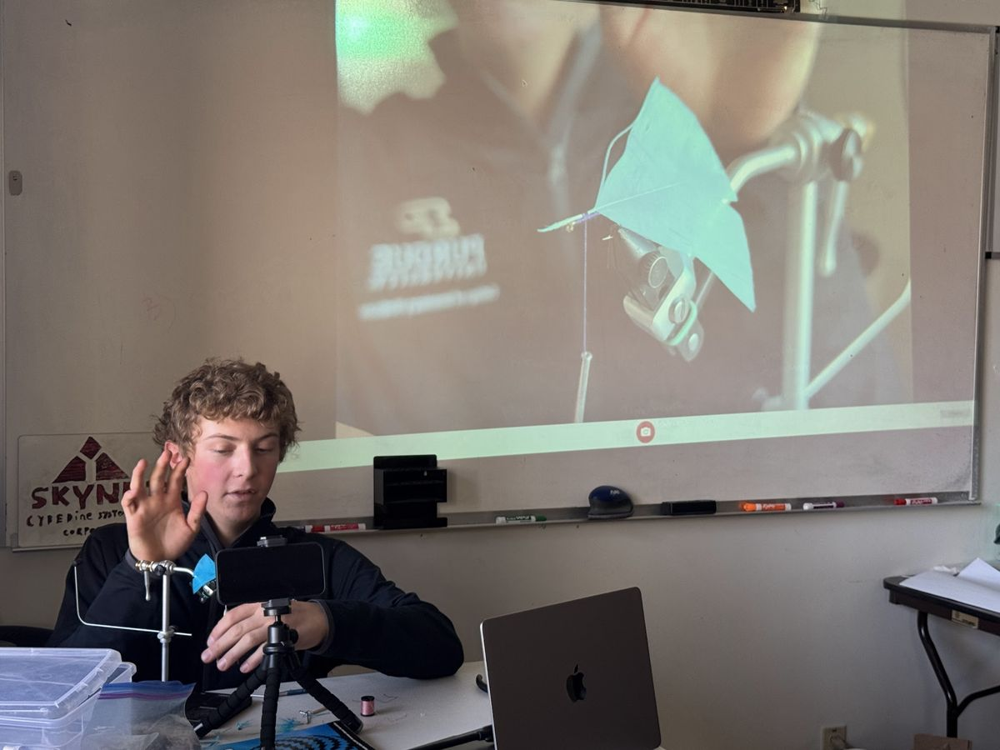
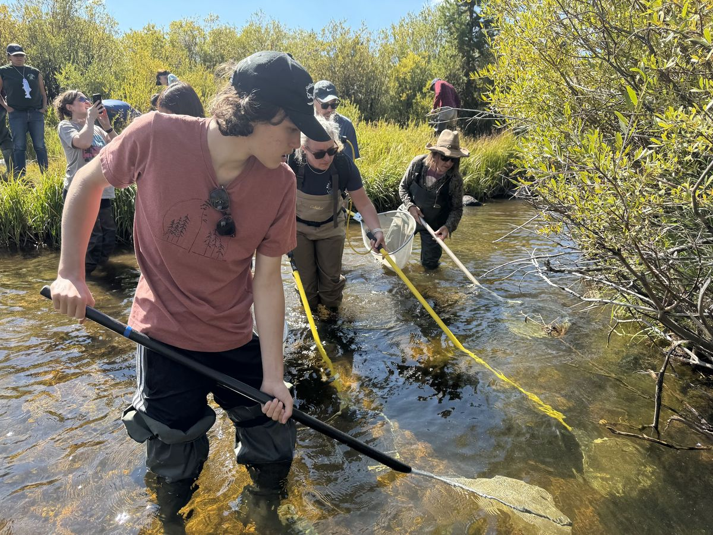
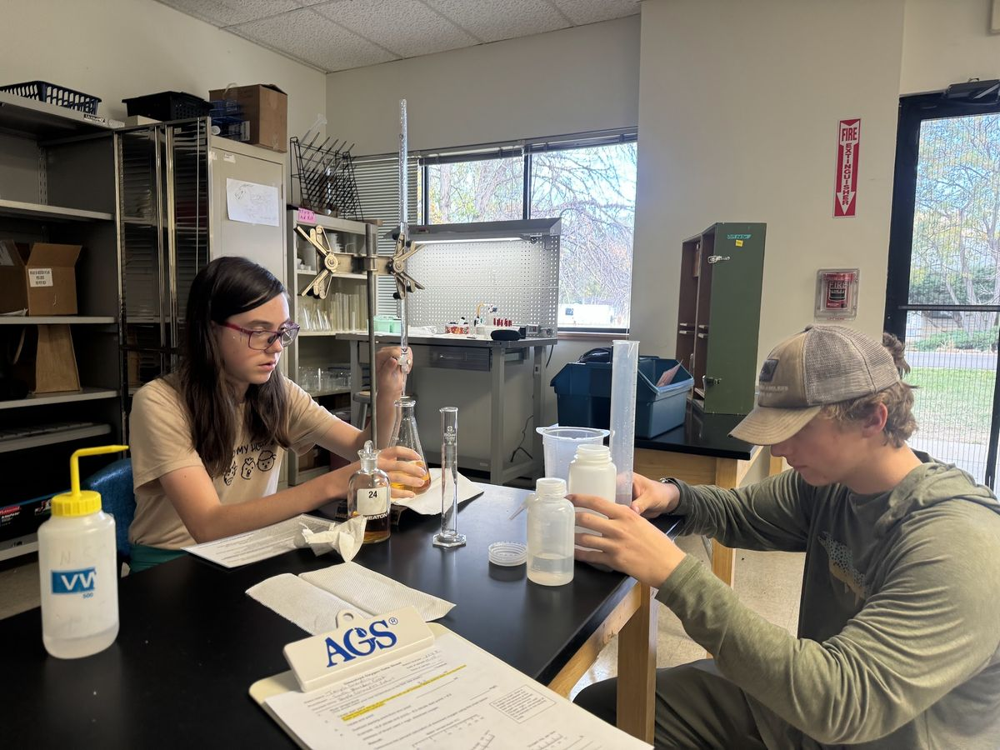
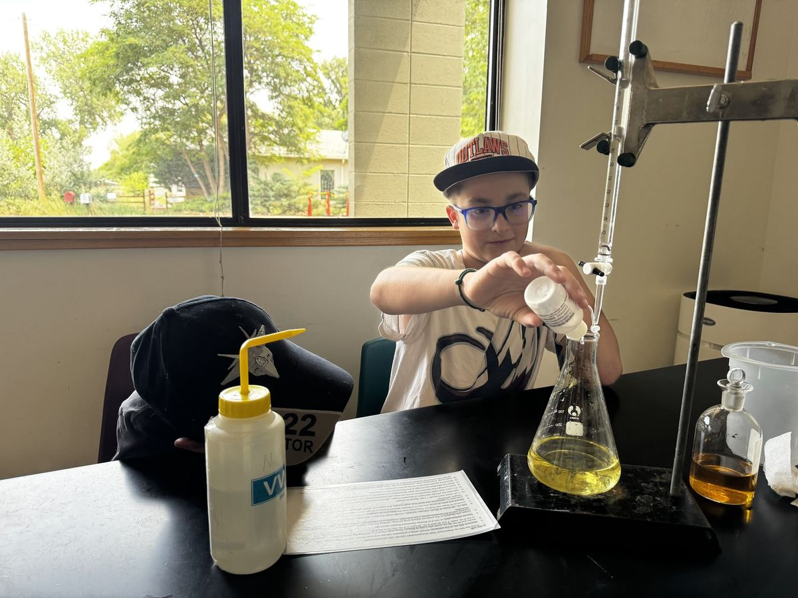
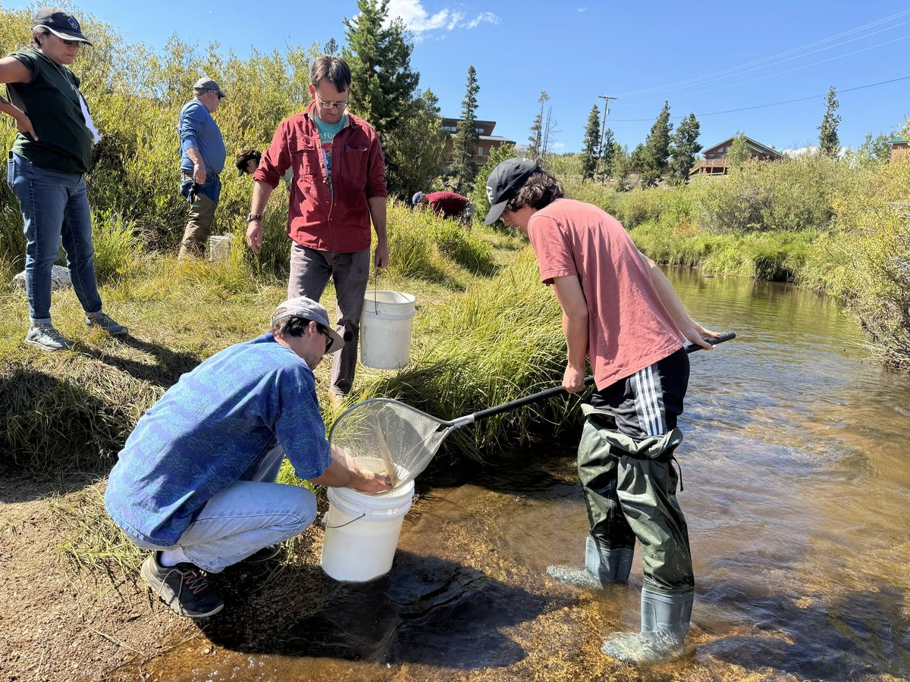

Where STEM and the water meet — fly fishing, fly tying, and hands-on river science for the next generation, built around neurodiversity-affirming, experiential learning.




Mike is an outdoor education and fly fishing instructor at Temple Grandin School, a school built for neurodivergent learners. He teaches quarterly fly fishing and fly tying classes as part of a broader focus on bringing river ecology education to youth.




Mike brought the Riverwatch program to Temple Grandin School — a statewide volunteer water quality monitoring effort run in partnership between River Science and Colorado Parks & Wildlife. Mike and a group of students trained and became certified to sample and analyze local waters, contributing real data to a program that supplies roughly a third of Colorado's water quality monitoring statewide.
Mike spearheaded bringing Trout in the Classroom into the River Ecology program at Temple Grandin School. In this national Trout Unlimited program, students raise trout from eggs to fingerlings before releasing them into a nearby coldwater stream — building a direct, hands-on connection between the classroom and watershed conservation.